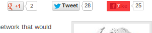

The purpose of this plugin is to automatically click the Like buttons on all of the websites that you browse.
It looks like this, when it is running:

The red box with the number in it is a countdown timer, which randomly waits between 5 and 60 seconds before it clicks the Like button.